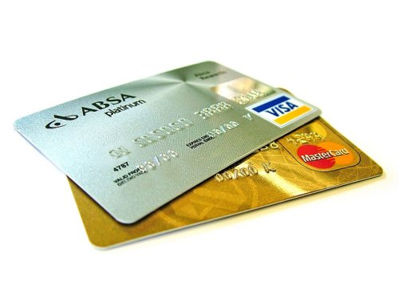
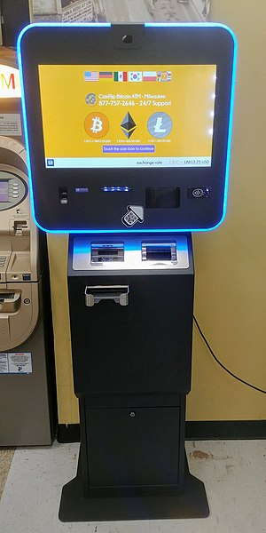
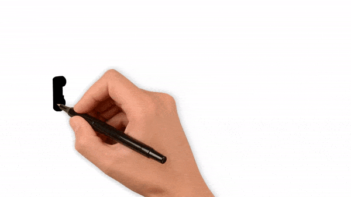

Introduction to Bitcoin
-
Bitcoin is a cryptocurrency created on the Blockchain
-
No bank or government controls this currency
-
The cryptocurrency is fully decentralized
-
Profits in Bitcoin are made by buying it at a low price and selling at a higher price
-
Bitcoin is open 24 hours per day unlike other stock markets which close at 5pm
-
Payments in Bitcoin are faster than traditional Credit Cards and bank transfers
-
Bitcoin transactions are stored publicly but identity of the person is private
Current Supply of Bitcoins
The total amount of Bitcoins is 21 millions. Currently 18.5 million Bitcoins have been mined which means there are currently 2.5 million Bitcoins left to be mined. If you think about this number then basic knowledge will tell you the price of Bitcoin will increase as time progresses.Price of Bitcoin
In 2009 the public sale of Bitcoin was $1 for 1309.03 Bitcoins. If do you a calculation you will find out the price of Bitcoin was 0.00076 USD. You could get it for less than peanuts if you knew what it would be worth in the future from back then.How to buy Bitcoin?
1. Bank transfer
In many countries this seems to be the best option which gives it the lowest costing fee. Lower fee means higher profit. Exchanges do ask for verification id so be aware of this. Bank transfers are also slow to transfer as it can take up 3 to 7 days.2. Credit Card
Using a Credit Card to pay for Bitcoin is probably the easiest way and you would receive the Bitcoins instantly after you have verified yourself. You can purchase Bitcoin with a Credit Card from Coinbase and Coinmama. Although Coinbase is for Europe, USA, UK, Canada, Australia and Singapore. 3. Debit Card
If you decide to use Coinbase to buy Bitcoin with a Debit Card then all you need to do is add the Debit Card number to your Coinbase profile. Verify your identity card and then make the Bitcoin purchase. The problem with Debit Cards is that fees can be high and they do ask for veritfication before any sort of transaction.4. Cash
Buying Bitcoin using cash is the most private way of making a Bitcoin purchase. Please note this has to be somebody you know and trust. If you don't know the person then you should be a using a payment system like Escrow to transfer the Bitcoin. The problem with buying Bitcoin in cash is that you can easily be robbed or scammed.5. Bitcoin ATM
Purchasing Bitcoin from an ATM Bitcoin machine is very private since no personal information is required to make the purchase but the bad part about this is Bitcoin ATMs usually have a 20% markup cost fee associated with it. Should you have easy access to an ATM Bitcoin machine then go ahead and buy it since it is a fast way to buy Bitcoins. Selecting a cryptocurrency Exchange - which exchange is preferred?
The rise of cryptocurrency Exchanges has made it simple and convenient for people to purchase Bitcoin. Some cryptocurrency brokers have bank transfers, debit and credit cards as service offerings.
1. Limitations - the amount of coins you need to buy
Choose a cryptocurrency exchange when:- You need to buy many coins
- The coin is only offered on that broker exchange
2. Rate of exchange - buy Bitcoin at the cheapest exchange rate
The price of Bitcoin changes and varies all the time from one place to the next. This depends on the exchange rate of currency being used on that exchange. Compare the different prices of the various exchanges and make a a choice.3. Reputation - purchase Bitcoin without getting scammed
Find out if the cryptocurrency exchange you plan to use is well established. Look at the age of the exchange. One of the cryptocurrency exchanges that got famous in a short space of time was Binance.4. Security - how secure are cryptocurrency exchanges?
Ensure the cryptocurrency you choose is fully secure. The exchange needs to support dual authentication with The Google Aunthenticator application. The exchange needs to send an email each time a user logs in to the account.
Secure your cryptocurrencies - which Bitcoin wallet is recommended?
There are roughly three types of cryptocurrency wallets that you should know about. Some experts believe that you only own the Bitcoin if you have access to the encryption keys. If you purchase a wallet to store your cryptocurrencies then this would be a better option for security.
1. Hardware wallets
These are the hardware devices that are built for managing the private key and public key addresses. Most popular hardware wallets allow the consumer to store more than 22 cryptocurrencies and over 500 ERC-20 tokens.Two of the most popular are:
- Ledger Nano S
- Trezor
2. Paper wallets
This is where you write down or print your private key. This paper should not be connected to any internet device and must be locked up in a safe.3. Desktop wallets
The name says it all, this is sofware wallet which needs to be installed on the Desktop. While there are many software wallets available for Bitcoin and other altcoins, this method is not very secure.Avoid losing money - do not fall for Bitcoin scams
Follow the tips here to never fall for any Bitcoin scams. All over the web, scams of Bitcoin are increasing drastically as scammers target non technical users. Be very cautious and read every fine print that you can to make sure you are safely using money online. Below are the top four tips.
1. Read up on reviews
Go on Google, Twitter, Reddit and other platforms to make sure that the exchange you plan to use is reliable. Luckily for you, we have already completed that.2. Research
Research, Research, Research and more Research. Ask people you personally know if they have used the platform before to find out if the platform is reliable or not. You do want to be safe and not lose any money in the process. 3. Never investment in Bitcoin investments run by people
If somebody tells you they will invest your Bitcoin and return to you a profit then it is classified as a scam.4. Escrow
If the Bitcoin you intend to purchase is not from an exchange or if you plan to buy the Bitcoin privately then use escrow to make payment.Automated Trading Bot - powerful algorithms to trade Bitcoin for profit
A trading bot is a more advanced way of earning profits in Bitcoin without trading manually. It is a software script to complete the trades on your behalf. Here are the commerical trading bots you are welcome to use. Below are some factors to look when choosing an automated trading bot.
1. Price of using the trading bot
Look at the pricing of the trading bot service, do they charge monthly or yearly? What is the price difference between one trading bot company and the other trading bot company. What is the price if you decide to build the trading bot yourself?2. Efficiency
How efficient is the trading bot? does it trade all the time without any manual intervention? If you are using a company, is the support online twenty four seven just in case something goes wrong. How easy is it to setup the trading bot?3. Backtesting
Backtesting is the process to find out how well a strategy will perform using historical data. Can the trading bot backtest data and let you know it thinks it will perform?4. Optimization
A trading bot is not only about the above features, it also about the strategy and how you can do better with it in the future. Is the bot able to figure out the weak spots and able to make it better as time progresses.Frequently Asked Questions about Bitcoin
It can be very confusing for a beginner trying to buy Bitcoin so below is a list of questions that are frequently asked about Bitcoin.